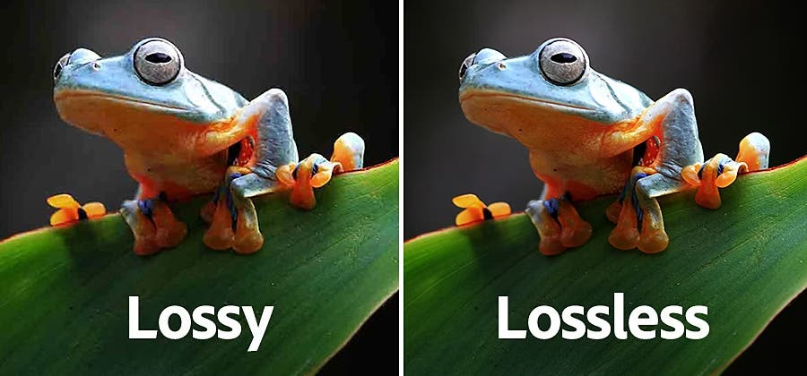

Compressie


Bij compressie pak je een bestand, maak je een lagere resolutie en gooit het extra data weg. Dit maakt het zodat je meer afbeeldingen of andere dingen kan opslaan en wordt meestal gebruikt bij foto's. Foto's bestaan uit heel veel pixels en elke pixel heeft een binaire code die opgeslagen moet worden.
Er zijn twee soorten compressies bij afbeeldingen lossless en lossy bij lossy worden er minder pixels opgeslagen en wordt het bestand dus een stuk kleiner. Een voorbeeld hiervan is jpeg ook bekend als jpg. Bij lossless pakt de computer een groep pixels met bijna dezelfde kleur en maakt ze exact dezelfde kleur zodat er minder contrast is maar het beeld wel nog evenveel pixels heeft. Lossless heeft twee voordelen: het eerste is dat de kwaliteit niet heel veel afneemt. De tweede is dat het omgedraaid kan worden naar het origineel.
Er is ook compressie bij geluidsfragmenten. Hierbij kijkt de computer of alle tonen wel door mensen opgenomen kunnen worden en zo niet worden deze tonen verlaagt of weggehaald.